ULTRAINSTINTO
Inicio
Acerca de
Servicios
Contacto
Ser Usuario
Las mejores carnes
Platos:
Paletilla asada
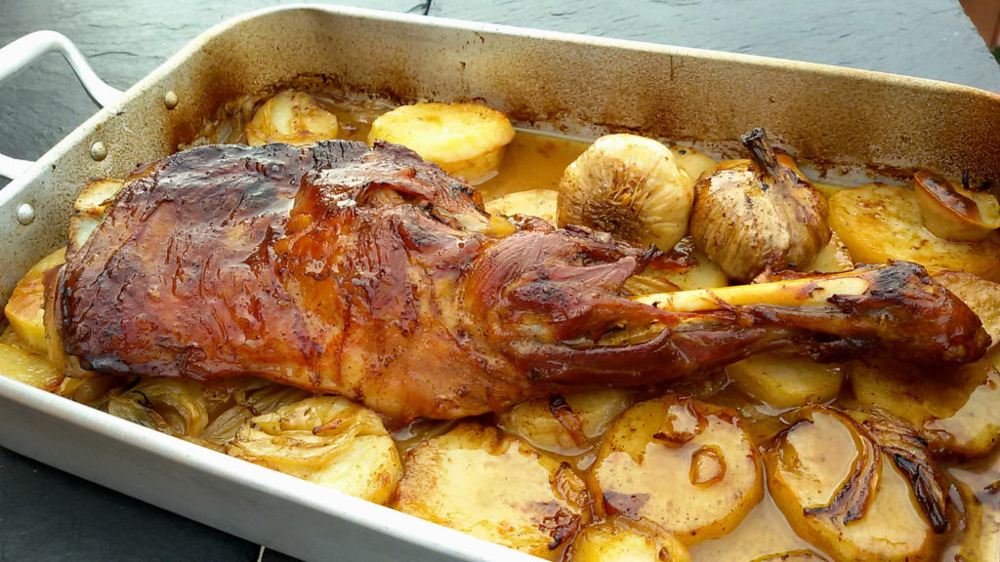
Asado de Ternasco
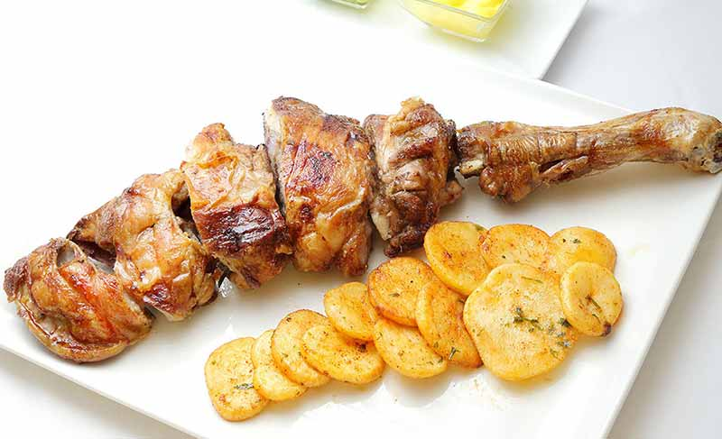
Pollo al chilindrón
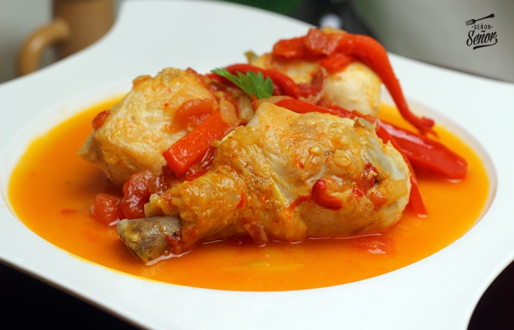
Magra con tomate
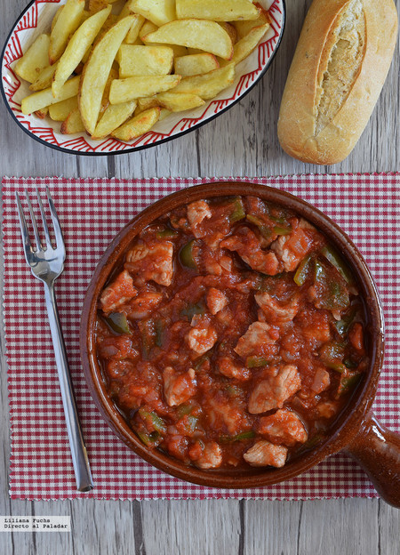
Cachopo
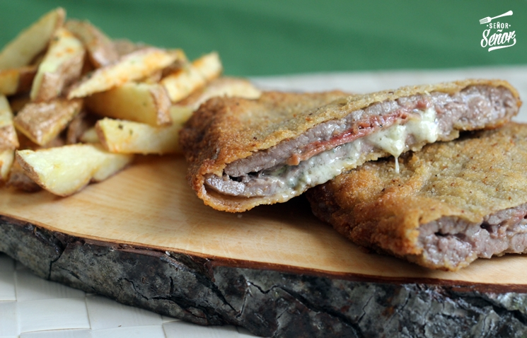
Pitu Caleya
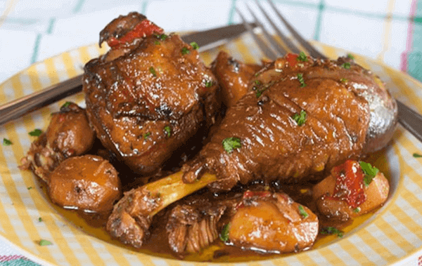
Solomillo al queso de Tresviso
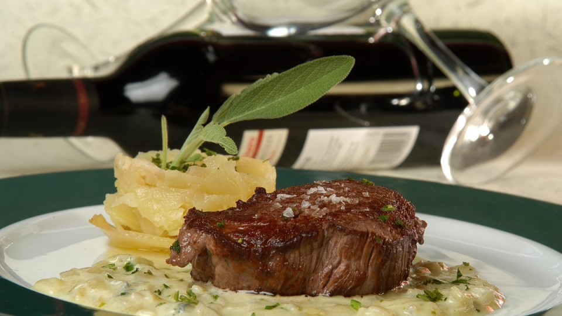
Escargots
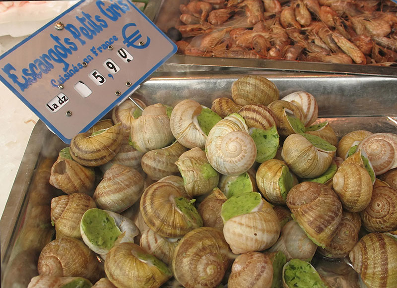
Butifarra con mongetes
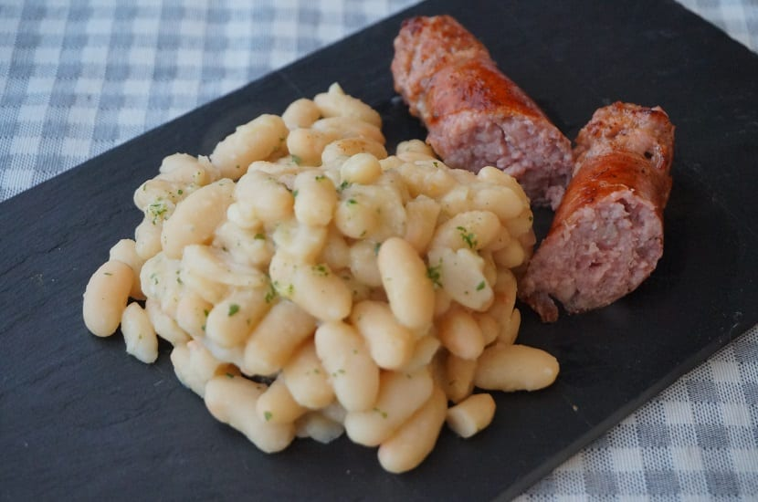
Lacon con grelos
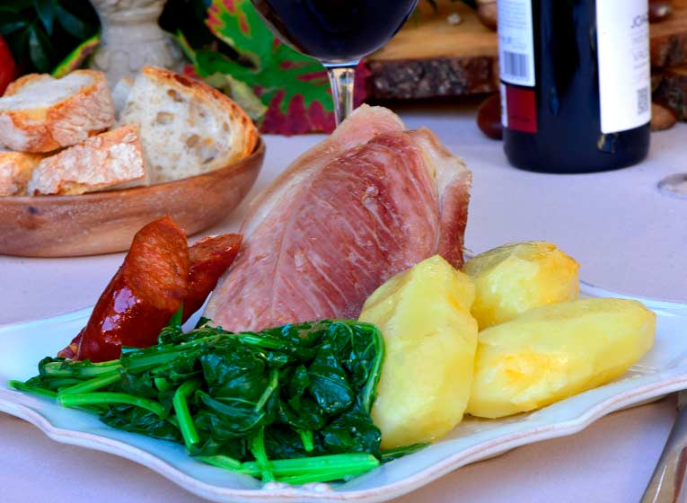
Estofado de rabo de toro
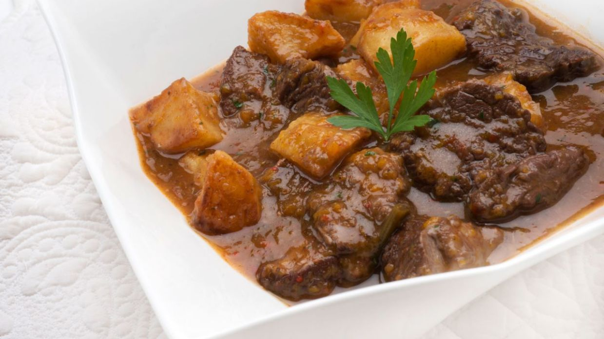